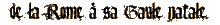

Il prit le sac que Nestor lui avait préparé pour le voyage et en extirpa son pantalon gaulois et un sayon de grosse toile. Il les enfila et engloutit sa toge en boule sur le dessus du sac. Il ne put s'empêcher de sourire en pensant qu'à l'arrivée Nestor ..."
"Depuis de longues heures, la rheda, tirée par quatre chevaux, roulait à vive allure. Marcus Aper avait fermé les rideaux. Chaque détail du paysage restait gravé dans sa mémoire. Combien de fois avait-il déjà emprunté cette route de Rome à Lugdunum ? Il ne comptait plus. Rome ou ailleurs, il plaidait partout où il y avait un innocent à défendre. Aper décida de se mettre à l'aise.
Première aventure de Marcus Aper qui, lors de vacances dans sa Gaule natale, est confronté à deux meurtres qu'il décide de résoudre. Ce lointain cousin d'Astérix, devant le laxisme de l'édile, décide de mener l'enquête... Cette première aventure du plus original (depuis le juge Ti) de nos "Grands Détectives" est racontée par une historienne de qualité qui sait allier la patte romanesque des meilleures reines du crime à la reproduction vivante de la vie quotidienne de nos ancêtres les Gaulois.
-LES VACANCES -MARCUS APER CHEZ -MARCUS APER -LES CALENDES -LE TRÉSOR DE |
Anne de Leseleuc, parallèlement à une riche carrière d'actrice et de directrice de théâtre (Théâtre moderne, Théâtre Hébertot), se passionne depuis toujours pour l'Antiquité. À l'âge de trente-sept ans, elle décide donc de reprendre ses études, à l'École du Louvre tout d'abord puis à la Sorbonne, où elle soutient une thèse de doctorat en Histoire et civilisations de l'Antiquité. Elle est également l'auteur de plusieurs romans historiques comme Le Douzième Vautour, couronné par le Prix de l'Académie française, ou Vercingétorix, le dernier roi gaulois. Son dernier roman, Le secret de Victorina, est paru chez l'Archipel en mars 2003.
Gaulois aux superbes moustaches, impénitent buveur de cervoise, grand amateur de femmes et de poules farcies, Marcus Aper n'en est pas moins un avocat brillant, installé à Rome et jouissant de la faveur de Titus, empereur des Romains. En vacances dans sa Gaule natale il est confronté à deux meurtres et, devant le laxisme de l'édile, il décide de mener l'enquête. Tous les personnages ont réellement existés, les jeux décrits pour l'élection de l'édile à Autun se sont vraiment déroulés et seule l'intrigue est le produit de l'imagination de l'auteur.
© Editions 10/18, département d’Univers Poche, 1992. Tous droits réservés. Toute reproduction, même partielle, par quelque procédé que ce soit, est interdite.